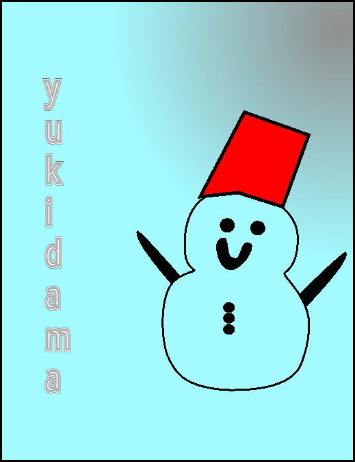

イラスト作成者さん紹介ページ
このページでは、トップページに掲載されたイラストの作成者さんをご紹介しています。
過去に掲載されたイラストは、アーカイブにて確認可能ですが、現在作成中ですので、もうしばらくお待ち下さい。

イラスト作成者：kosuke--さん
Scratchプロフィール： こちら
ひとこと：アイコンの所も少し入れております(？)
イラスト作成者さんの注目のプロジェクト
タイトル："コメアニメ#1消費者を馬鹿にしたような雑貨屋
コメント：もうすぐ#2出すから見てね
プロジェクトURL： https://scratch.mit.edu/projects/1216479781/